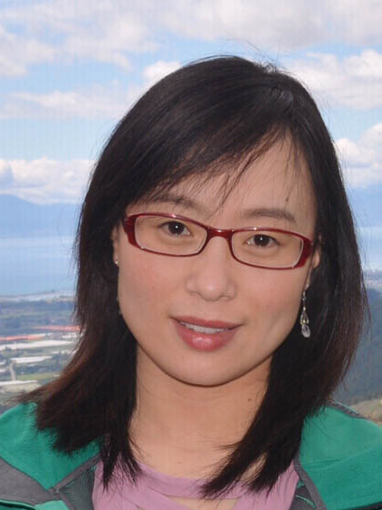
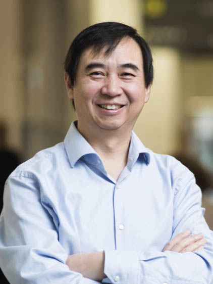

| Overview | Topics | Important Days | Paper Submission | Organizers | Program Committee |
Ruwang Jiao
School of Engineering and Computer Science, Victoria University of Wellington, PO Box 600, Wellington, New Zealand.
Email: ruwangjiao@gmail.com
Phone: +64-463 5233; Fax: +64 4 463 5045
Homepage: https://ruwangjiao.github.io/
Bing Xue
School of Engineering and Computer Science, Victoria University of Wellington, PO Box 600, Wellington, New Zealand.
Email: Bing.Xue@ecs.vuw.ac.nz
Phone: +64 4 463 5542; Fax: +64 4 463 5045
Homepage: https://homepages.ecs.vuw.ac.nz/~xuebing/
Mengjie Zhang
School of Engineering and Computer Science, Victoria University of Wellington, PO Box 600, Wellington, New Zealand.
Email: Mengjie.Zhang@ecs.vuw.ac.nz
Phone: +64 4 463 5654; Fax: +64 4 463 5045
Homepage: https://homepages.ecs.vuw.ac.nz/~mengjie/
Ruwang Jiao is currently a postdoctoral research fellow in artificial intelligence with the School of Engineering and Computer Science at Victoria University of Wellington (VUW). His research focuses mainly on evolutionary constrained optimization, Bayesian optimization, multiobjective machine learning, feature selection, and evolutionary antenna design. He has published over 20 papers in fully refereed journals and conferences such as IEEE Transactions on Evolutionary Computation, IEEE Transactions on Cybernetics, IEEE Transactions on Antennas and Propogation, and Information Sciences.

Bing Xue is currently a Professor of artificial intelligence and the Deputy Head of the School of Engineering and Computer Science, VUW. She has more than 300 articles published in fully refereed international journals and conferences. Her research focuses mainly on evolutionary computation, machine learning, classification, symbolic regression, feature selection, evolving deep NNs, image analysis, transfer learning, and multiobjective machine learning.
Prof. Xue is currently the Chair of the IEEE Computational Intelligence Society (CIS) Evolutionary Computation Technical Committee and IEEE CIS Task Force on Evolutionary Deep Learning and Applications, and an Editor of IEEE CIS Newsletter. She has also served as an Associate Editor for several international journals, such as IEEE Computational Intelligence Magazine, IEEE Transactions on Evolutionary Computation, and ACM Transactions on Evolutionary Learning and Optimization.

Mengjie Zhang is currently a Professor of computer science, the Head of the Evolutionary Computation Research Group, and the Associate Dean (Research and Innovation) of the Faculty of Engineering, Victoria University of Wellington, Wellington, New Zealand. He has published more than 700 research articles in refereed international journals and conferences. His current research interests include machine learning, evolutionary computation, genetic programming, image analysis, multiobjective decision-making, feature selection and reduction, scheduling and combinatorial optimization, and evolutionary deep learning and transfer learning.
Prof. Zhang is a fellow of IEEE, a fellow of the Royal Society of New Zealand, a fellow of Engineering New Zealand, and an IEEE Distinguished Lecturer. He was the Chair of the IEEE Computational Intelligence Society (CIS) Intelligent Systems and Applications Technical Committee, the IEEE CIS Emergent Technologies Technical Committee, and the IEEE CIS Evolutionary Computation Technical Committee. He is currently the Chair of the IEEE CIS PubsCom Strategic Planning Committee and the IEEE CIS Outstanding Ph.D. Dissertation Award Committee, and the Founding Chair of the IEEE Computational Intelligence Chapter in New Zealand.